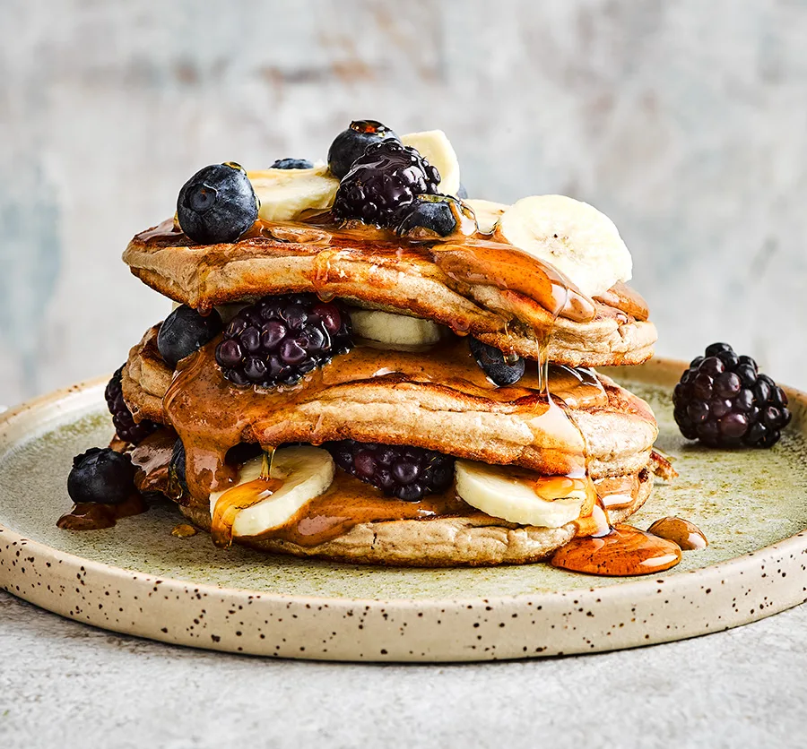

proteinpancakes
Easy Protein Pancakes

Ingredients
- 1 banana
- 75g oats
- 3 large eggs
- 2 tbsp milk (dairy, soya, oat or nut milks all work)
- 1 tbsp baking powder
- pinch of cinnamon
- 2 tbsp protein powder (whey, pea or whatever your preference)
- coconut oil, or a flavorless oil, for frying
- nut butter, maple syrup and berries or sliced banana to serve
Steps
- Whizz the banana, oats, eggs, milk, baking powder, cinnamon and protein powder in a blender for 1-2 mins until smooth. Check the oats have broken down, if not, blend for another minute.
- Heat a drizzle of oil in a pan. Pour or ladle in 2-3 rounds of batter, leaving a little space between each to spread.
- Cook for 1-2 minutes, until bubbles start to appear on the surface and the underside is golden. Flip over and cook for another minute until cooked through.
- Transfer to a warmed oven and repeat with the remaining batter. Serve in stacks with nut butter, maple syrup and fruit.